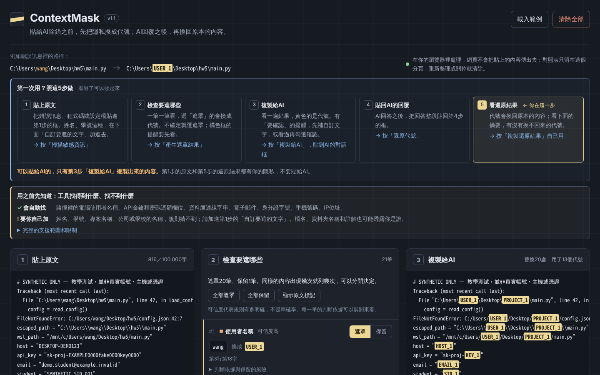
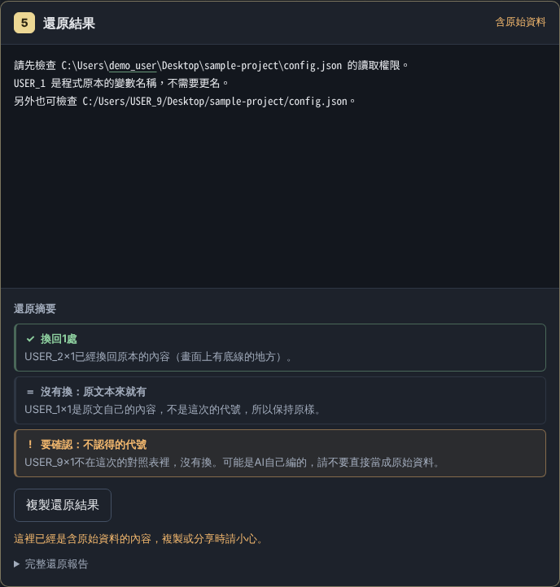

要解決的問題
我寫程式遇到錯誤，很常整段貼給AI問。可是Python的錯誤訊息會帶著C:\Users\使用者名稱，設定檔或.env裡可能有API金鑰、密碼，作業的註解也可能寫著姓名和學號。
每次自己一個個找、手動刪很容易漏掉；整段刪掉的話，AI又少了判斷問題的線索。
怎麼解決
在瀏覽器裡掃描貼上的內容，找到的東西一筆一筆讓使用者決定要遮還是留，要遮的換成USER_1這種短代號。路徑只換掉使用者名稱那一段，斜線、檔名和行號都留著，AI還是看得懂錯在哪裡。AI回覆之後貼回來，再把代號換回原本的內容，並列出哪些換回來了、哪些沒換。
規則只認得常見的格式，沒抓到不代表沒有敏感資訊，所以畫面最上面直接寫工具找得到什麼、找不到什麼，複製按鈕上面也會再提醒一次。
我負責的部分
- 作業只規定用Vibe Coding做一個網頁、用GitHub Pages公開，題目自己訂。我選了貼給AI之前先遮隱私這個題目，因為我自己就是會把錯誤訊息整段貼給AI的人，範圍先專攻程式除錯
- 做了四個設計決定（D01～D04），像是代號用USER_1這種短代號，而不是一長串亂碼，因為使用者和AI都比較好讀
- 自己操作每一版，指出提示容易漏看、畫面太雜這些問題，例如會影響隱私的提示不能收起來
- 要求查錯和大量測試；AI審查找到漏遮的時候，要求修好才公開，不帶著已知的漏遮上傳
- 從新手的角度要求在最上面加5個步驟的說明
AI協作
用到的AI工具
- Claude
- Codex
我做的判斷
- AI原本比較建議：敏感欄位沒遮完整就直接擋下複製。我選的是醒目提醒、讓使用者確認後還是可以複製（D03），因為我自己看到「檢查通過」就會直接複製，風險要擺在眼前，但一律擋下又會讓人不想用
- secrets底下的db: abc這種值，欄位名稱看不出敏感，不會自動遮。我決定保留逐欄位遮罩再加上確認（D04），因為整個物件都遮掉，AI就少了除錯線索
- 沒測到的項目要直接寫沒測到；AI跑的測試和我自己操作的感受分開記，不把AI的測試算成我測的
AI做的事
- Claude照我的規格寫網頁的程式，包含偵測、遮罩、代號分配和還原，也寫了自動測試、隨機測試和瀏覽器測試
- Codex做了最早的原型、審查規格，在上傳前的幾輪審查找到三類漏遮和三個確認缺口（R07、R08、R09），並附上重現的例子
怎麼驗證
- 每找到一個問題，就把重現的例子加進自動測試，修完再整套重跑
- 上傳前請Codex獨立驗收最後一版，重跑核心測試和隨機測試，也比對重新建置的檔案是不是一模一樣
- 最後一版我自己用Edge、Chrome、Brave在電腦和手機上操作過
技術筆記
架構
整個工具就是一個index.html，不用安裝，也可以離線用。開發時分成src/裡的app.js（偵測、遮罩、還原的規則）、body.html和style.css，再用build.cjs組成一個檔案。
流程是：貼上原文→用規則找出候選（路徑裡的使用者名稱、金鑰、密碼欄位、信箱、IP等）→使用者逐筆決定遮或留→換成代號，同時記下對照表→AI回覆貼回來之後，只把對照表裡有的代號換回去。對照表只存在這個分頁的記憶體裡，重新整理就清掉。網頁用CSP（限制網頁可以連到哪裡的設定）擋掉對外連線。
做過的決定
- 代號用短的USER_1，不用一長串亂碼。程式裡本來就可能有USER_1，所以先找出原文已經有的代號，新的跳過它，跳號的原因直接顯示在結果旁邊
- 金鑰保留開頭（例如sk-proj-），讓AI知道是哪一種金鑰；代價是會透露金鑰種類
- 私鑰是多行的整塊內容，換成一個代號會改變行數，這一版不處理，遇到就直接擋下複製
驗證過的部分
- 遮罩後直接還原，要和原文一字不差，這條寫在核心測試和隨機測試裡
- Codex在上傳前另外寫了1,270組排版和邊界的測試，逐字還原都通過
- 我自己用Edge、Chrome、Brave在電腦和手機上操作過最後一版
還沒做到的
- Firefox、Safari沒有測，也沒有用螢幕閱讀器測
- 5個步驟的說明還沒有找真的新手試用
- JSON的冒號單獨寫在一行時會誤遮，現在是被JSON檢查擋下、不能複製，還沒修
- 想做依父層判斷整個物件要不要遮（例如secrets底下全部遮），但要先想清楚哪些父層適合整個遮